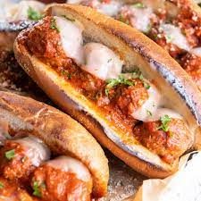

Meatball Sub

Description:
The meatball sub is a delicious sandwich made with warm meatballs, marinara sauce, and melted mozzarella cheese served on a toasted sub roll. The meatballs can be homemade or store-bought, and are topped with marinara sauce and cheese before being baked in the oven. The result is a hot, hearty sandwich that's perfect for lunch or dinner.
Ingredients:
- Meatballs (homemade or store-bought)
- Sub buns
- Marinara sauce
- Shredded mozzarella cheese
- Fresh basil (optional)
- Salt
- Black pepper
- Olive oil
Recipe:
- Preheat the oven to 375°F (190°C).
- Split the sub buns in half and brush with olive oil.
- Place the buns on a baking sheet, cut-side up, and bake for 5 minutes.
- Meanwhile, warm the marinara sauce in a saucepan over low heat.
- Place the meatballs on the bottom half of each sub bun.
- Spoon the warm marinara sauce over the meatballs.
- Sprinkle shredded mozzarella cheese on top.
- Return the subs to the oven and bake for an additional 10-15 minutes or until cheese is melted and bubbly.
- Remove from oven and let cool for a few minutes.
- Serve hot, garnished with fresh basil, if desired.